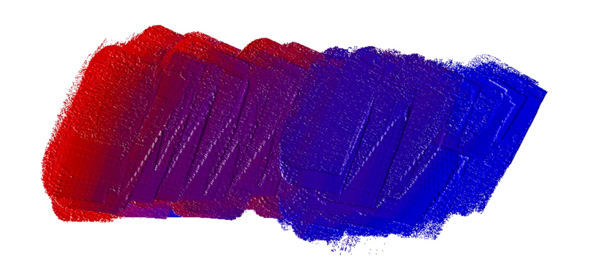
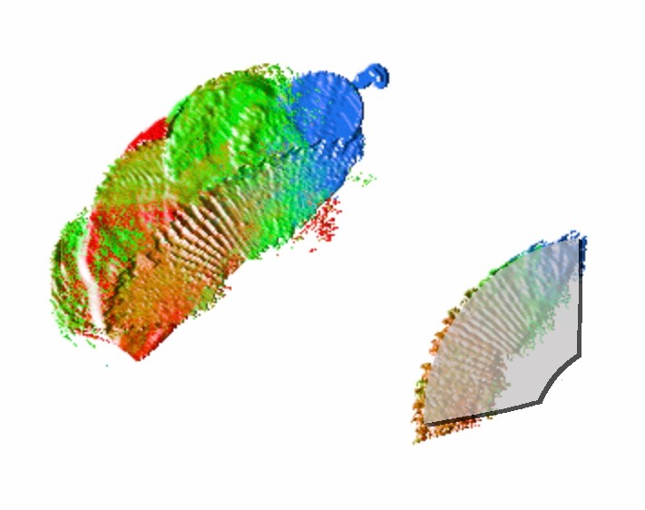

该应用程序旨在模拟自然绘画过程。混色是绘画解决方案的主要功能。当然，我们支持它。此外，我们在绘画过程中模拟真实的混色过程。我们的目标是提供以下高级功能
传统软件中使用颜色的方式都是基于机器显示颜色的方式，它是基于光的发射的，而现实世界中染料和颜料的颜色是基于光吸收的。
对于某些颜色来说，光发射的混合与光吸收的混合是不同的。例如，随着发光，与黄色混合产生灰色。但是在吸收光中是绿色的。因此，使用发光系统进行绘画不但对用户不直观，而且在梯度上给出了错误的结果。
| 基于光的发射 | 基于光的吸收 | |
|---|---|---|
| 渐变： 红色到黄色 | |
|
| 渐变： 蓝色到黄色 | |
|
| 渐变： 红色到蓝色 | |
 |
| 色轮 | |
|
可以使用发光混合来产生从红色到黄色和从红色到紫色的梯度。但只有光吸收混合可以混合从蓝色到黄色的绿色，红色，蓝色和黄色的黑色渐变。简单一点说就是：发光中的混合倾向于白色，并且光吸收中的混合倾向于黑色。
| 我们的模拟 | 真正的油混合 | |
|---|---|---|
| 渐变： 蓝色到黄色 | |
|
| 渐变： 红色到蓝色 |
|
|
| 渐变：红色到黄色 | |
|
| 色轮 | |
|
我们的应用程序使用光吸收系统，原始的颜色是红色，黄色和蓝色。所以你可以用与调色板一样的真实油画混合颜色。
我们的绘画工具，如画刀和画笔是只一个彩色载体。它可以从绘画支架上的一个位置取出一些颜色，然后放到另一个位置。所有的参数都在着色期间得以保存，如数量和密度。
在绘画过程中，一些绘画工具如画刀和画笔在不同的位置收集不同的颜色。它就形成了一种颜色模式。
| 描述 | 抓屏 |
|---|---|
|
色彩模式的创建
色彩模式将会保存到当前的绘画工具中，当然也会保存到整个绘制作品中。 |
 |
| 使用色彩模式进行点画法示例 |


|
| 使用相同色彩模式的不同效果 |

|
色彩模式有两种保存方式：
| 色彩模式管理 | 描述 |
|---|---|
|
保存到当前绘画中 |
这个色彩模式会保存到当前的工具中，它能够通过“自动重置”的设置来重复使用。 |
|
保存到整个应用程序中 |
我们将会创建一个填充了这个色彩模式的新的绘画工具。 |